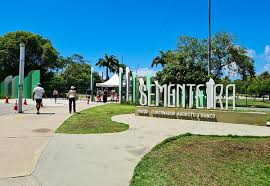

Sementeira

parque pode ser utilizado pelos aracajuanos e turistas para pratica de atividades esportivas e de lazer , pesquisas ambientais além de outras atividades em contato com a natureza. O espaço conta com parque infantil, campo de futebol, quadra poliesportiva, espaço com aparelhos para exercícios físicos, pista para caminhada, quiosques para piqueniques, sanitários,lagos,e iluminação adequada.
- Parque infantil
- Campo de futebol
- Quadra poliesportiva
- Aparelhos para exercícios físicos
- Pista para caminhada
- Quiosques para piqueniques
- Sanitários
- Lagos e áreas verdes
- Iluminação adequada para visitas noturnas